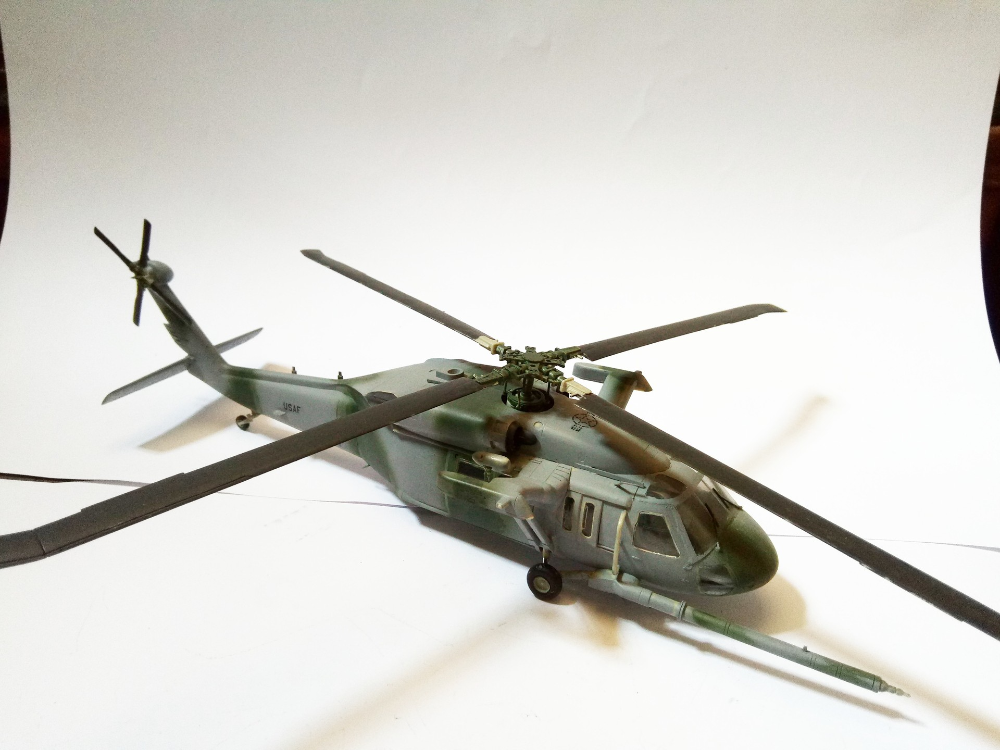

Aerei · scale model archive
Sikorsky MH-60L Blackhawk
Sikorsky MH-60L Blackhawk — Kit: Revell, Scale: 1/48. US Army Aviation Branch 160 SOAR (A) 91-26365 September 2001 #1/48 #Revell

Photo gallery
English description
US Army Aviation Branch 160 SOAR (A) 91-26365 September 2001
#1/48 #Revell
Descrizione italiana
US Army Aviation Branch 160 SOAR (A) 91-26365 settembre 2001.